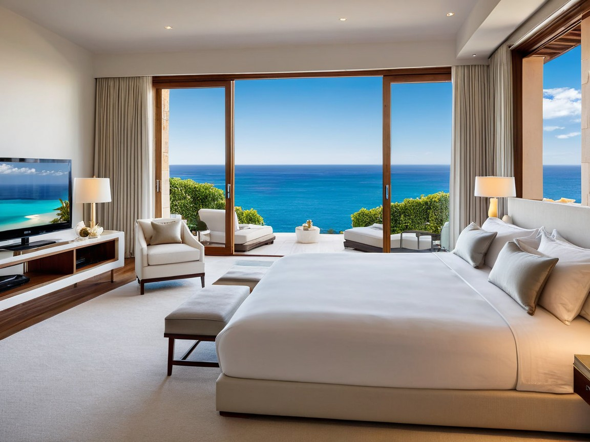

Oceanview Villa Room
Room Price:
- (April – October): $350 per night
- (November – March): $450 per night
- Weekly Discount: 10% off for 7-night stays or more
Room Description
Nestled near a cliff with an unobstructed view of the endless horizon, the Oceanview Villa Room offers the perfect balance of luxury and relaxation. The room is designed to blend comfort with the natural beauty of its surroundings. The moment you enter, you’re greeted by the soothing sounds of the ocean and an expansive view from windows that stretch along the entire wall.
Room Amenities
The amenities includes a king-size bed with Egyptian cotton linens and hypoallergenic and soft throw pillows.
the room also includes a bathroom with a freestanding soaking tub and rain shower. bath products provided
The room also has a Private outdoor space with two lounge chairs and a small bistro table.
The technology given to customers includes a
55-inch Smart TV with streaming services (Netflix, Amazon Prime, etc.),
Bluetooth sound system,
High-speed Wi-Fi throughout the room and property,
in-room tablet for service requests and room control,
a minibar fully stocked with premium beverages, local snacks, and refreshments.
a coffee machine, tea kettle, and a selection of premium coffees and teas and last but not least a Air conditioning and heating machine with adjustable settings for year-round comfort.